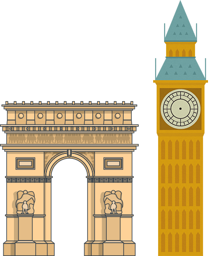
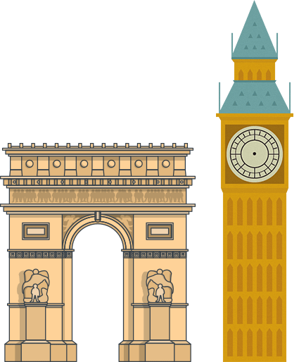

Apa itu Art Deco ??
Art Deco adalah gaya hias yang lahir & populer setelah Perang Dunia I dan berakhir sebelum Perang Dunia II ( 1920 - 1939 ).
Art Deco merupakan gabungan dari berbagai macam aliran, antara lain : Kubisme, Futurisme, Bauhaus, Konstruktivisme, ‘ancient art’ dari beberapa kebudayaan dunia, dan juga kemajuan teknologi.
Art Deco banyak diterapkan dalam berbagai bidang, misal : Bidang Arsitektur, Industri, Interior, Fashion, Seni Grafis, dll.

 
